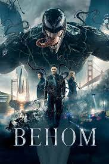

ТОП 6 ФИЛЬМОВ

Веном 1
Биоинженерная корпорация «Фонд жизни» извлекает космический корабль, который разбился в Малайзии с четырьмя внеземными симбиотическими формами жизни (хотя один из них ускользает, слившись с выжившим астронавтом, затем с парамедиком и со старушкой), и переносит их в исследовательский центр в Сан-Франциско.
Интерстеллер
В будущем на Земле концентрация кислорода в атмосфере необратимо падает, что вызывает ухудшение климата и приведёт к неминуемой гибели человечества. Фермер Купер, в прошлом пилот НАСА, ведёт хозяйство со своей семьёй в американской глубинке, страдая от неурожая и пыльных бурь.
Ярость
Апрель 1945 года. Нацистская Германия рушится, но войска СС и вермахт отчаянно сопротивляются войскам Антигитлеровской коалиции. Закалённый в боях сержант Дон Кольер по прозвищу Wardaddy («Папаша»), воевавший с немцами ещё в Африке, командует танком «Шерман» (M4A2E8) и его экипажем из пяти человек.
Такси 3
В канун Рождества банда Санта-Клаусов совершает ограбления банков в Марселе. Ловить преступников предстоит таксисту Даниелю и полицейскому Эмильену. Но те вытворяют такое, что вреда от них может быть больше, чем от самих грабителей.
Мир юрского периода 3
Через четыре года после разрушения Исла-Нублар динозавры теперь живут и охотятся вместе с людьми по всему миру. Этот хрупкий баланс изменит будущее и раз и навсегда определит, останутся ли люди высшими хищниками на планете, которую они теперь делят с самыми страшными существами в истории.
Вышка (2022)
Бекки всегда была экстремалом, но после гибели мужа она решила прекратить погоню за адреналином. Впрочем, ей нужно совершить еще одно, последнее восхождение — вместе с подругой она забирается на вершину радиомачты высотой более 600 метров, чтобы развеять прах своего покойного супруга.